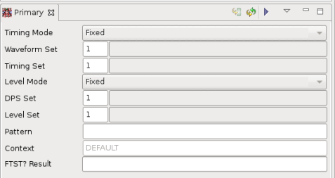
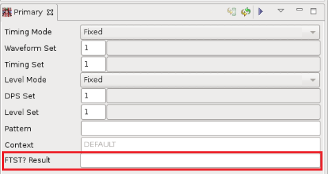

Primary view
The Primary View is part of the Hardware Perspective and has three functions:
- Display the current primaries (timing, levels, and so on).
- Change the current primaries.

- Execute functional tests with the current primaries and retrieve Pass/Fail result returned by the FTST? - (Functional TeST) firmware command.
Display the current primaries
The Primary View displays the primary set information. The fields that appear in the Primary View are determined by the particular test setup. For example, if a DPS set is included in your test setup, a DPS set field will appear in the Primary View.
When the primaries are changed during test program execution, the primary view is updated automatically by means of the notification mechanism.
Change the current primaries
Using the Primary View, you can change the current primaries.
Editable primaries are:
- Timing Equation
- Timing Spec Set / Waveform Set
- Timing Set
- Level Equation
- Level Spec Set / DPS Set
- Level Set
- Pattern
Context is a read-only primary.
The following features help you to edit the primaries:
- Content assist
You can use the content assist by pressing CTRL+Space to choose desired primary. You can use content assist either for the empty field or a partially typed specifier. The content assist will provide all defined values, which match the typed-in text in case of the timing/level equation. For the spec sets and set numbers the content assist will provide only valid data for the current equation number.
- Standard copy/paste
You can use standard copy/paste function to fill out primary specifier fields.
- Error highlighting
If you type an invalid value for a primary field (either by direct typing or by copy/paste), the background color of the field will change to yellow.
After you have edited your primaries, you must click the button Send changes to FW .
Execute functional tests and retrieve execution results
For functional tests only:
Click the button Execute functional test to execute patterns directly from the eclipse debugger with the current primaries specified.
When execution completes, check the FTST? Result field at bottom of the Primary view to find out Pass/Fail result of the functional test.

Functional changes
- Introduced before SmarTest 6.3.2
- SmarTest 7.0.1: Added primary entries for Pin Scale 9G pins: Transition Test, Clock Forwarding, Jitter, and PRBS.
- SmarTest 7.5.0: Added a button in the toolbar to execute patterns with primaries specified; added a field "FTST? result" to display Pass/Fail result returned by the FTST? firmware command.